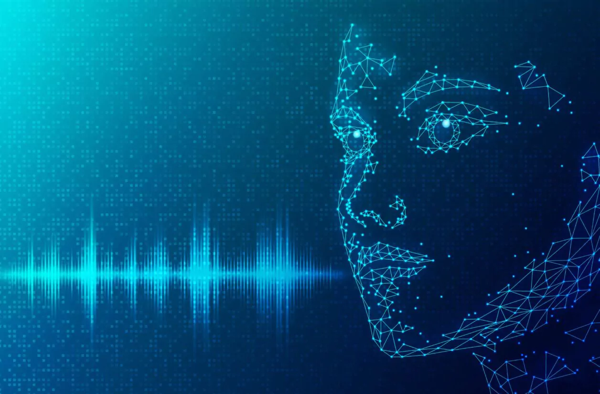
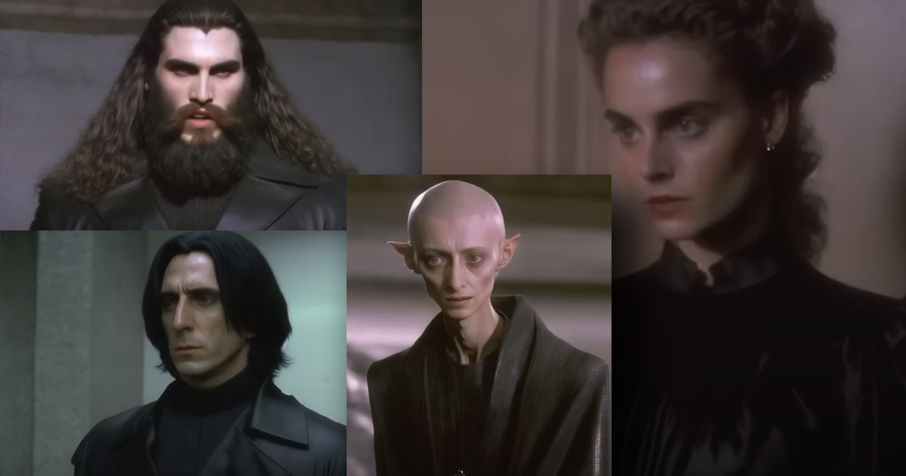
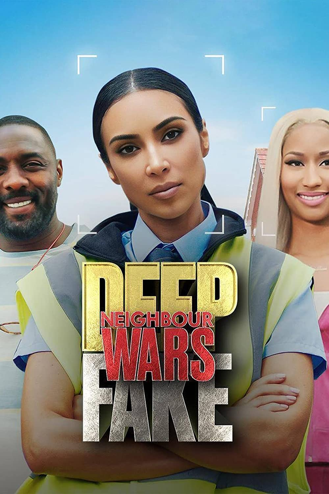
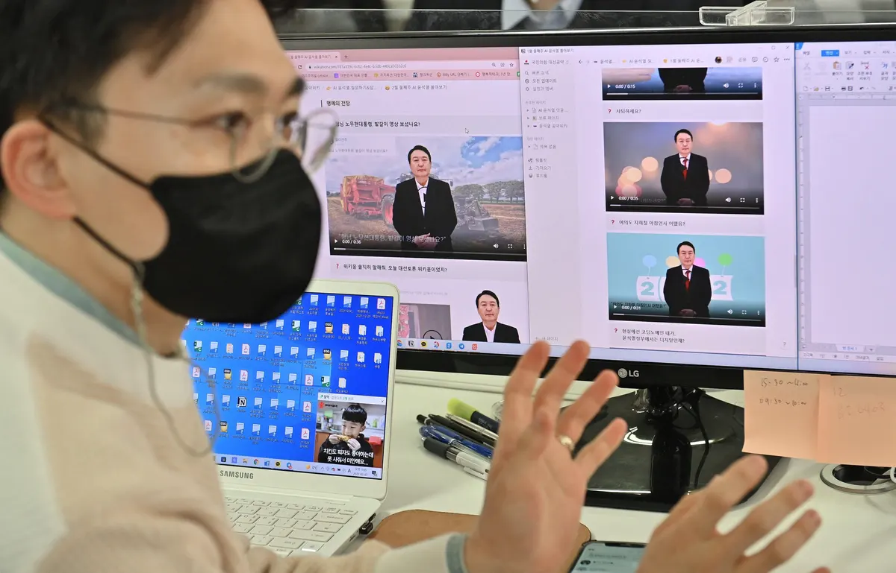
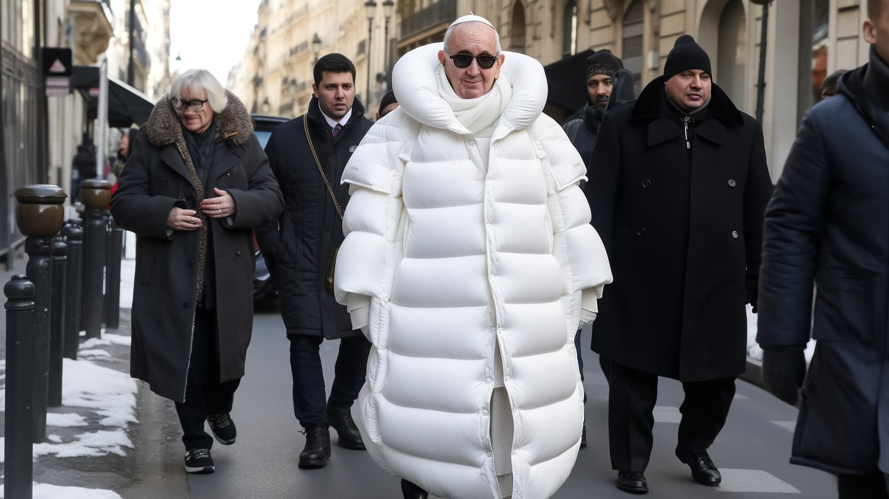

Revue de presse sur le "deepfake"
Un "deepfake" capable de duper les présidents

Récemment, François Hollande, ex-président français, s'est entretenu avec Petro Porochenko ex-président
russe. C'est donc pendant une discussion d'environ 15 minutes que les deux ex-dirigeant ont échangé sur
la situation en Ukraine et sur les accords de Minsk.
Cependant, cette discussion avec l'ex-président russe n'était pas réel du moins pas entièrement.
En effet, François Hollande s'est bien entretenu avec quelqu'un mais ce n'était pas Petro Porochenko, il
s'agissait tout simplement d'un "deepfake" réaliser par deux humoristes russes.
Néanmoins, une telle tromperie n'est pas sans conséquences, car Hollande, ne sachant pas cela, a révélé des
informations confidentielles sur les accords de Minsk. Cette conversation s'étant retrouvé sur les réseaux
sociaux,
nombreux sont les internautes à réagir au propos de l'ex président.
Article
de L'union
"Deepfake", on reste sans voix devant sa voix

ElevenLabs est un simulateur de voix, très utile pour créer des voix. Il a cependant été détourné de ses
fonctions par un grand nombre d'utilisateurs, car
ce logiciel est récemment devenu accessible aux grand public. Il y a donc rapidement eu des dérives souvent
à caractère raciste, homophobe, etc.
On a par exemple pu entendre Emma Watson en train de lire Mein Kampf.
En effet, il est facile avec tous ces outils de créer une vidéo de toute pièce de manière simple, rapide,
mais surtout ultra-réaliste.
Cette outils a été développer par ElevenLabs, une start-up anglaise.
Ils utilisent l'intelligence artificielle afin de récréer une voix réaliste.
Néanmoins, la start-up, a constaté que des utilisations abusives de leur outil
sont de plus en plus courante. Les concepteurs de ce logiciel ont donc annoncé
qu'ils voulaient durcir le processus d'identification en mettant en place des mesures
de protection supplémentaires. En vérifiant les auteurs des échantillons soumis
et de procéder à des vérifications manuelles.
Article
du Figaro
Quand la pop culture rentre dans la mode

Grace à ChatGPT, Midjourney et D-ID, il est possible depuis quelque semaine
de voir les personnages de "Harry Potter", "Le seigneur des Anneaux", etc
en train de faire des défilés de mode pour balenciaga. Des vidéos à première
vue drôles, à l'exception du fait que toutes les vidéos chantent les louanges de la
marque balenciaga.
Plusieurs "deepfake" promouvant la marque ont fait le tour d'internet.
Cependant, la marque n'en est pas la source. Ce sont les internautes qui leur
octroient une publicité gratuite surtout avec les scandales actuelle de la marque.
Ces vidéos sont donc bien innocentes, mais cela pose des questions sur la
potentielle utilisation malsaine de ces outils qui, en effet, permettent de
créer très facilement des deepfakes. ElevenLab qui permet de refaire des voix à partir
d'un échantillon de 1 minute a d'ailleurs supprimé l'accès gratuit à son
logiciel.
Article de PhotoTrend
"Deepfake", des utilisations diverses

Le "deepfake", permet de recréer des visages et des voix de
manière très réaliste. De plus en plus utilisé dans les documentaires
ou le cinéma afin de rajeunir les stars ou recréer la voix
d'acteur décédé. Cependant, les outils permettant ces prouesses
techniques sont désormais accessible au grand public et souvent
utilisées à des fins malveillantes.
On peut par exemple voir un Barack Obama tenir des propos insultant
ou des séries regroupant Rihanna, Beyoncé et Andy Murray sans qu'ils
aient participé à celle-ci. Pire encore, Volodymyr Zelensky,
qui ordonne à ses soldats de déposé les armes.
Les "deepfake" font également des victimes. En France par exemple
"Jujufitcats" une youtubeuse fitness, reçoit des photos d'elles dénudée
qu'elle n'a jamais prises.
Article de Franceinfo
Un journal télévisé fictif

De faux présentateurs télé, un faux plateau, de fausse info, en bref,
une fausse émission télé. En effet, tout est générés par une intelligence
artificielle et les vidéos sont publiées sur les réseaux sociaux afin de
promouvoir des idées pro-Pékin dans l'intérêt du Parti communiste chinois.
Ce trucage et bien d'autre, montre le problème que pause ces "deepfake"
grandissant dans le domaine de l'information. Car grâce à ces technologies
de fausses informations peuvent être véhiculé de manière très convaincante.
l'hypertrucage est donc un danger, et les entreprises développant des outils
de "deepfake" essaient de lutter au maximum contre ces utilisations malveillantes
en durcissant le système d'authentification et en obtenant l'identité réelle
de leurs utilsateurs.
Article de BFMTV
Facebook fait de la pub pour du "deepfake" pornographique

Depuis plusieurs jours, des publicités promouvant une application de
"deepfake" qui incite à faire des montages de vidéos pornographiques
mettant en scène des célébrités, apparaissent sur tous les réseaux sociaux de Meta.
Cette application nommée "FaceMega", ne se revendiquent pas en tant qu'application
pour faire des montages pornographiques, cependant, comme le montre leur publicité
sur Facebook, on peut le comprendre comme tel. Elle était d'ailleurs disponible
sur "Apple Store" et "Play store" gratuitement. Elle est désormais payante
pour 8$/semaines.
On peut très bien imaginer l'utilisation que peuvent en faire les gens.
Par exemple pour de l'intimidation scolaire ou pour nuir à une personne
dans son travail par exemple. Car il suffit d'une simple photo pour réaliser
ce genre de deefake.
D'après l'analyste Genevieve Oh, le trafic et la consultation de sites web spécialisés
dans les deepfakes pornographiques a littéralement explosé. Cette augmentation
n'est pas dû au hasard, elle provient de la plateforme Twitch, après qu'un
streamer a diffusé des montages pornographiques de streameuses célèbres.
Répendant ainsi l'existence de cette pratique au grand public.
Article de Phonandroid
Le pape abandonne sa soutane pour une doudoune

Depuis quelques jours, sur les réseaux sociaux, il est possible
de voir le Pape porter une grosse doudoune blanche. Cette image
est fausse et a été généré par l'intelligence artificielle Midjourney.
Comme a pu le dire la célébrité américaine Chrissy Teigen, il est désormais
très difficile de faire la différence entre une vraie image et une image
générée par une intelligence artificielle ce qui reflètent le ressenti de
beaucoup d'internautes.
Même si ces générations ne sont pas parfaites, il faut regarder dans
les détails pour s'appercevoir de la supercherie. Mais comme notre système
d'information repose sur le scrolling, on ne prête que trop rarement aux détails
d'une image. De plus les intelligences artificielles s'améliorent
de plus en plus, ce qui à terme mènera à des images parfaites et
indésselable.
Article de Clubic
TikTok l'exterminateur de "deepfake"

Le réseau social a en effet, annoncé durcir ses règles vis-a-vis
des contenus généré par des intelligences artificielles afin
de faire des "deepfake".
Article de